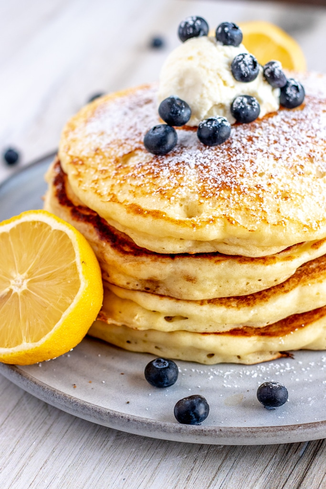

Odin Recipes - Ricotta Pancakes
Recipe: Ricotta Pancakes

A great breakfast meal!
These ricotta pancakes are light, fluffy, and delicious.
Easy to make, this recipe goes best with some yoghurt, honey and blueberries.
Ingredients
- 1 cup ricotta
- 3/4 cup milk
- 2 eggs, separated
- 1/2 tsp vanilla extract
- 1 cup flour
- 1/2 tsp baking powder
- 1/4 tsp salt
Method
- Mix ricotta, milk, vanilla and egg yolks
- In a separate bowl, whisk together the dry ingredients
- Mix the wet (excluding the egg whites) and dry ingredients together
- Whisk the eggs together until soft peaks appear
- Spoon in a small amount of the egg white and mix
- Fold in the remaining egg white
- Cook batter in fry pan to make pancakes, roughly 1/4 cup per pancake
Makes approximately 9 pancakes.
Serve with Greek Yoghurt, blueberries and honey.
Back to homepage
Muesli Bars
Baked Oats